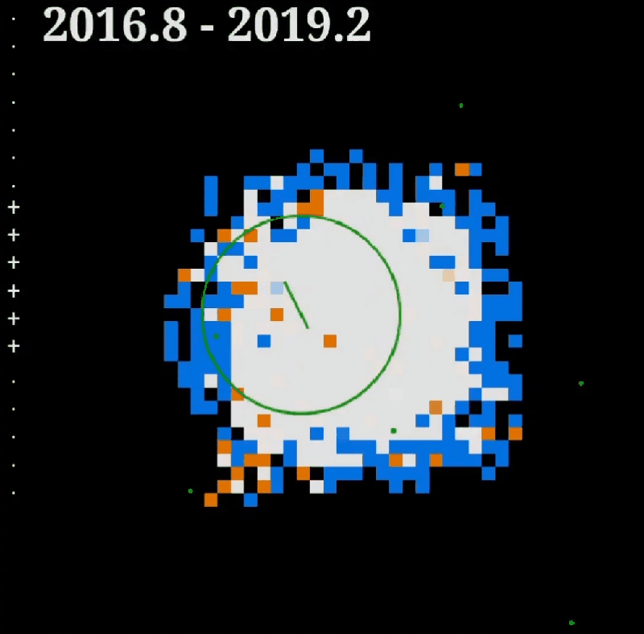

Sirus
- Coordinates : RA,Dec = 101.2854, -16.7233

- Sirius appears bright because of its intrinsic luminosity and its proximity to the Solar System. At a distance of 2.64 parsecs (8.6 ly), the Sirius system is one of Earth's nearest neighbours. Sirius is gradually moving closer to the Solar System; it is expected to increase in brightness slightly over the next 60,000 years to reach a peak magnitude of −1.68.